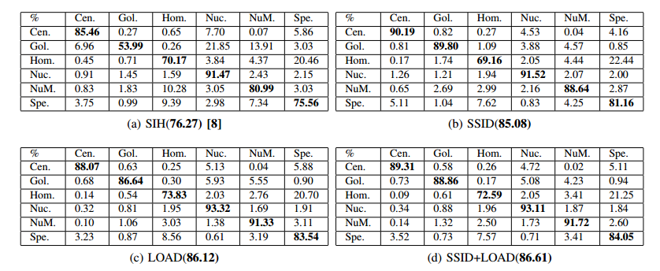

Exploring Illumination Robust Descriptors for Human Epithelial Type 2 Cell Classification
Xianbiao Qi, Guoying Zhao, Matti Pietikainen,
Oulu University, Finland
Abstract
Strong illumination variation in the Human Epithelial Type 2 (HEp-2) cells is the key challenge for the classification task. Targeting to improve the robustness of the HEp-2 classification system to the illumination variation, this paper deeply explores discriminative and illumination robust descriptors. To be specific, we propose a novel Spatial Shape Index Descriptor (SSID) to capture spatial layout information of the second-order structures, and also utilize a Local Orientation Adaptive Descriptor (LOAD) that is firstly designed for texture classification to the HEp-2 cell classification task. Both features show strong robustness to the illumination variation. Meanwhile, the SSID and the LOAD also show great complementarity.
Four different sets of experiments are used to evaluate the SSID, the LOAD and the combination of them. Note that, two submissions to the new Executable Thematic on Pattern Recognition Techniques for Indirect Immunofluorescence images analysis both achieved superior performance. Compared to the first place method of the ICPR 2014 HEp-2 cell classification contest that combined four types of features, both of our submissions outperformed it with only one type of feature under the Leave-One-Specimen-Out evaluation. Meanwhile, we evaluated our features on a newly created large-scale HEp-2 data set and the achieved superior performance further validated the effectiveness of our features.
Paper
Xianbiao Qi, Guoying Zhao and Matti Pietikainen. Exploring Illumination Robust Descriptors for Human Epithelial Type 2 Cell Classification. Submitted to IEEE Trans. on Medical Imaging.
Our Results


Source Code
LOAD Evaluation SSID Evaluation Shape Index Histogram Evaluation
Here, we compare our LOAD and SSID with the state-of-the-art descriptor Shape Index Histogram(SIH), if you use the provided SIH code, please cite the reference [1].Our Newly Created Dataset
References